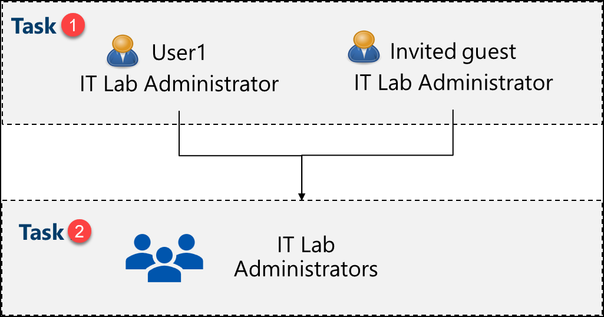
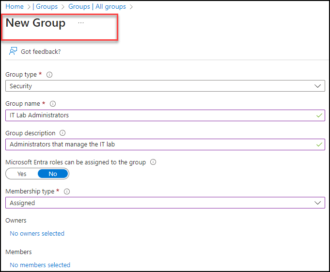

Lab - Manage Microsoft Entra ID Identities
Lab Introduction
This is the first in a series of labs for Azure Administrators. In this lab, you learn about users and groups. Users and groups are the basic building blocks for an identity solution.
This lab requires an Azure subscription. Your subscription type may affect the availability of features in this lab. You may change the region, but the steps are written using East US.
Estimated Timing: 30 Minutes
Lab Scenario
Adamantus Technologies is building a new lab environment for pre-production testing of apps and services. A few engineers are being hired to manage the lab environment, including the virtual machines. To allow the engineers to authenticate by using Microsoft Entra ID, you have been tasked with provisioning users and groups. To minimize administrative overhead, membership of the groups should be updated automatically based on job titles.
Architecture Diagram

Job Skills
- Task 1: Create and configure user accounts.
- Task 2: Create groups and add members.
Task 1: Create and Configure User Accounts
In this task, you will create and configure user accounts. User accounts will store user data such as name, department, location, and contact information.
-
Sign in to the Azure portal -
https://portal.azure.com. -
To proceed to the portal, select Cancel on the Welcome to Azure splash screen.
Note: The Azure portal is used in all the labs. If you are new to the Azure, search for and select
Quickstart Center. Take a few minutes to watch the Getting started in the Azure portal video. Even if you have used the portal before, you will find a few tips and tricks on navigating and customizing the interface. -
Search for and select
Microsoft Entra ID. Microsoft Entra ID is Azure's cloud-based identity and access management solution. Take a few minutes to familiarize yourself with some of the features listed in the left pane. -
Select the Overview blade and then the Manage tenants tab.
Did you know? A tenant is a specific instance of Microsoft Entra ID containing accounts and groups. Depending on your situation, you can create more tenants and Switch between them.
-
Return to the Entra ID page by pressing back in the browser or selecting the option in the breadcrumb menu.
-
As you have time, explore other options such as Licenses and Password reset.
Create a New User
-
Select Users, then in the New user drop-down select Create new user.
-
Create a new user with the following settings (leave others with their defaults). On the Properties tab notice all the different types of information that can be included in the user account.
Setting Value User principal name az104-user1Display name az104-user1Auto-generate password checked Account enabled checked Job title (Properties tab) IT Lab AdministratorDepartment (Properties tab) ITUsage location (Properties tab) United States -
Once you have finished reviewing, select Review + create and then Create.
-
Refresh the page and confirm your new user was created.
Invite an External User
-
In the New user drop-down select Invite an external user.
Setting Value Email your email address Display name your name Send invite message check the box Message Welcome to Azure and our group project -
Move to the Properties tab. Complete the basic information, including these fields.
Setting Value Job title IT Lab AdministratorDepartment ITUsage location (Properties tab) United States -
Select Review + invite, and then Invite.
-
Refresh the page and confirm the invited user was created. You should receive the invitation email shortly.
Note: It is unlikely you will be creating user accounts individually. Do you know how your organization plans to create and manage user accounts?
Task 2: Create Groups and Add Members
In this task, you create a group account. Group accounts can include user accounts or devices. These are two basic ways members are assigned to groups: Statically and Dynamically. Static groups require administrators to add and remove members manually. Dynamic groups update automatically based on the properties of a user account or device. For example, job title.
-
In the Azure portal, search for and select
Microsoft Entra ID. In the Manage blade, select Groups. -
Take a minute to familiarize yourself with the group settings in the left pane.
-
Expiration lets you configure a group lifetime in days. After that time the group must be renewed by the owner.
-
Naming policy lets you configure blocked words and add a prefix or suffix to group names.
-
In the All groups blade, select + New group and create a new group.
Setting Value Group type Security Group name IT Lab AdministratorsGroup description Administrators that manage the IT labMembership type Assigned Note: An Entra ID Premium P1 or P2 license is required for dynamic membership. If other Membership types are available, the options will show up in the drop-down.

-
Select No owners selected.
-
In the Add owners page, search for and select yourself (shown in the top right corner) as the owner. Notice you can have more than one owner.
-
Select No members selected.
-
In the Add members pane, search for and select the az104-user1 and the guest user you invited. Add both of the users to the group.
-
Select Create to deploy the group.
-
Refresh the page and ensure your group was created.
-
Select the new group and review the Members and Owners information.
Note: You may be managing a large number of groups. Does your organization have a plan for creating groups and adding members?
Key Takeaways
Congratulations on completing the lab. Here are some main takeways for this lab:
- A tenant represents your organization and helps you to manage a specific instance of Microsoft cloud services for your internal and external users.
- Microsoft Entra ID has user and guest accounts. Each account has a level of access specific to the scope of work expected to be done.
- Groups combine together related users or devices. There are two types of groups including Security and Microsoft 365.
- Group membership can be statically or dynamically assigned.
Address: H-34, Ground Floor, Sector 63, Noida, Uttar Pradesh
Email: info@ceekh.com